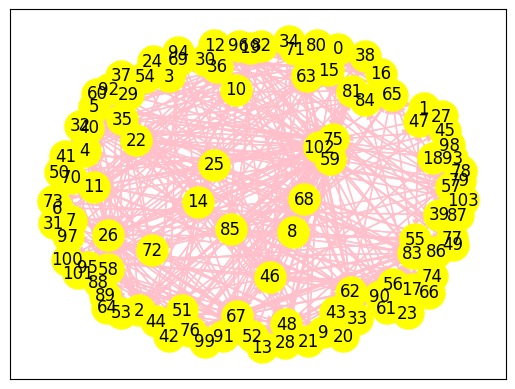

Tugas 7 | keyword_extraction
Kata Kunci Berita
Mencari dokumen berdasarkan kata kunci memudahkan kita dalam menemukan dokumen yang relevan. Kata kunci adalah kata penting yang sering muncul dalam sebuah teks atau dokumen. Biasanya, kata kunci mengandung istilah yang unik dan memiliki makna spesifik.
Proses Pembersihan Teks
Import Library
# Library untuk text preprocessing
import nltk
from nltk.corpus import stopwords
from nltk.tokenize import word_tokenize
import re
# Library untuk data manipulation
import pandas as pd
import networkx as nx
import matplotlib.pyplot as plt
from tqdm import tqdm
# Library untuk text similarity
from sklearn.metrics.pairwise import cosine_similarity
Load Data#
data = pd.read_csv(''tugas-7/data_100.csv'')
data
---------------------------------------------------------------------------
FileNotFoundError Traceback (most recent call last)
<ipython-input-2-bf12fb864b55> in <cell line: 1>()
----> 1 data = pd.read_csv('../content/data_100.csv')
2 data
/usr/local/lib/python3.10/dist-packages/pandas/io/parsers/readers.py in read_csv(filepath_or_buffer, sep, delimiter, header, names, index_col, usecols, dtype, engine, converters, true_values, false_values, skipinitialspace, skiprows, skipfooter, nrows, na_values, keep_default_na, na_filter, verbose, skip_blank_lines, parse_dates, infer_datetime_format, keep_date_col, date_parser, date_format, dayfirst, cache_dates, iterator, chunksize, compression, thousands, decimal, lineterminator, quotechar, quoting, doublequote, escapechar, comment, encoding, encoding_errors, dialect, on_bad_lines, delim_whitespace, low_memory, memory_map, float_precision, storage_options, dtype_backend)
1024 kwds.update(kwds_defaults)
1025
-> 1026 return _read(filepath_or_buffer, kwds)
1027
1028
/usr/local/lib/python3.10/dist-packages/pandas/io/parsers/readers.py in _read(filepath_or_buffer, kwds)
618
619 # Create the parser.
--> 620 parser = TextFileReader(filepath_or_buffer, **kwds)
621
622 if chunksize or iterator:
/usr/local/lib/python3.10/dist-packages/pandas/io/parsers/readers.py in __init__(self, f, engine, **kwds)
1618
1619 self.handles: IOHandles | None = None
-> 1620 self._engine = self._make_engine(f, self.engine)
1621
1622 def close(self) -> None:
/usr/local/lib/python3.10/dist-packages/pandas/io/parsers/readers.py in _make_engine(self, f, engine)
1878 if "b" not in mode:
1879 mode += "b"
-> 1880 self.handles = get_handle(
1881 f,
1882 mode,
/usr/local/lib/python3.10/dist-packages/pandas/io/common.py in get_handle(path_or_buf, mode, encoding, compression, memory_map, is_text, errors, storage_options)
871 if ioargs.encoding and "b" not in ioargs.mode:
872 # Encoding
--> 873 handle = open(
874 handle,
875 ioargs.mode,
FileNotFoundError: [Errno 2] No such file or directory: '../content/data_100.csv'
Preprocessing Text#
def clean_text(text):
text = re.sub(r'((www\.[^\s]+)|(https?://[^\s]+))', ' ', text) # Menghapus https* and www*
text = re.sub(r'@[^\s]+', ' ', text) # Menghapus username
text = re.sub(r'[\s]+', ' ', text) # Menghapus tambahan spasi
text = re.sub(r'#([^\s]+)', ' ', text) # Menghapus hashtags
text = re.sub(r"[^a-zA-Z : .]", "", text) # Menghapus tanda baca
text = re.sub(r'\d', ' ', text) # Menghapus angka
text = text.lower()
text = text.encode('ascii','ignore').decode('utf-8') #Menghapus ASCII dan unicode
text = re.sub(r'[^\x00-\x7f]',r'', text)
text = text.replace('\n','') #Menghapus baris baru
text = text.strip()
return text
def clean_stopword(tokens):
listStopword = set(stopwords.words('indonesian'))
filtered_words = [word for word in tokens if word.lower() not in listStopword]
return filtered_words
Membersihkan text dari tanda baca yang ada, kemudian menyesuaikan text agar bisa diolah lebih lanjut.
import nltk
nltk.download('punkt')
nltk.download('stopwords')
[nltk_data] Downloading package punkt to /root/nltk_data...
[nltk_data] Package punkt is already up-to-date!
[nltk_data] Downloading package stopwords to /root/nltk_data...
[nltk_data] Package stopwords is already up-to-date!
True
def preprocess_text(content):
result = {}
for i, text in enumerate(tqdm(content)):
cleaned_text = clean_text(text)
tokens = word_tokenize(cleaned_text)
cleaned_stopword = clean_stopword(tokens)
result[i] = ' '.join(cleaned_stopword)
return result
data['cleaned_news'] = preprocess_text(data['isi'])
data
100%|██████████| 100/100 [00:00<00:00, 262.50it/s]
| judul | tanggal | isi | kategori | cleaned_news | |
|---|---|---|---|---|---|
| 0 | FOTO: Melihat Kehancuran Gaza usai Satu Tahun ... | Senin, 07 Okt 2024 10:30 WIB | Satu tahun agresi Israel ke Gaza yang dimulai ... | internasional | agresi israel gaza oktober warga palestina ter... |
| 1 | VIDEO: Setahun Agresi Israel ke Gaza, Korban T... | Senin, 07 Okt 2024 10:03 WIB | Agresi Israel ke Jalur Gaza telah memasuki sat... | internasional | agresi israel jalur gaza memasuki senin . rent... |
| 2 | Jenderal Brigade Al-Quds Iran Hilang usai Isra... | Senin, 07 Okt 2024 09:59 WIB | Kepala pasukan Brigade Al-Quds Iran, Esmail Qa... | internasional | kepala pasukan brigade alquds iran esmail qaan... |
| 3 | VIDEO: Kelompok Militan Pakistan Serang Karach... | Senin, 07 Okt 2024 09:28 WIB | Sebuah ledakan terjadi di dekat bandara intern... | internasional | ledakan bandara internasional karachi pakistan... |
| 4 | Setahun Agresi Gaza, Israel Was-was Antisipasi... | Senin, 07 Okt 2024 09:25 WIB | Pasukan Pertahanan Israel (IDF) bersiaga ketat... | internasional | pasukan pertahanan israel idf bersiaga ketat p... |
| ... | ... | ... | ... | ... | ... |
| 95 | VIDEO: Momen Perang Yel-yel Warnai Debat Perda... | Minggu, 06 Okt 2024 20:42 WIB | Perang yel-yel dari tiga pendukung calon guber... | nasional | perang yelyel pendukung calon gubernur dki jak... |
| 96 | Dharma Sindir Gagasan RK-Pramono soal Kemaceta... | Minggu, 06 Okt 2024 20:34 WIB | Calon gubernur jalur independen, Dharma Pongre... | nasional | calon gubernur jalur independen dharma pongrek... |
| 97 | Pramono Janji Buat Jaringan Transjakarta hingg... | Minggu, 06 Okt 2024 20:31 WIB | Calon gubernur Jakarta Pramono Anung berjanji ... | nasional | calon gubernur jakarta pramono anung berjanji ... |
| 98 | Jurus RK Atasi Macet: Bikin Angkutan Sungai Hi... | Minggu, 06 Okt 2024 20:29 WIB | Calon Gubernur Jakarta Ridwan Kamil mengungkap... | nasional | calon gubernur jakarta ridwan kamil mengungkap... |
| 99 | Pramono: 354 Ribu Orang Menganggur di Jakarta,... | Minggu, 06 Okt 2024 20:15 WIB | Calon Gubernur DKI Jakarta Pramono Anung menga... | nasional | calon gubernur dki jakarta pramono anung angka... |
100 rows × 5 columns
Memisahkan Kalimat menjadi per Kata#
kalimat = nltk.sent_tokenize(data['cleaned_news'][4])
kalimat = [sentence.replace('.', '') for sentence in kalimat]
kata = nltk.word_tokenize(data['cleaned_news'][4])
kata = list(set(k for k in kata if k != '.'))
kalimat
['pasukan pertahanan israel idf bersiaga ketat perbatasan menjelang agresi jalur gaza palestina minggu ',
'idf bersiaga mengantisipasi serangan kelompok milisi hamas palestina senin peringatan konflik oktober ',
'the times of israel melaporkan idf memperkuat pasukan perbatasan mengantisipasi serangan roket jarak ditembakkan gaza ',
'sumber militer percaya hamas serangan roket operasinya ditumpas israel ',
'komando selatan pertahanan serangan skenario bulanbulan bersamaan acara peringatan dilaksanakan aman pernyataan idf ',
'militer hamas menembakkan roket gaza perbatasan israel ',
'militer memperkuat pertahanan perbatasan gaza koridor netzarim lokasi pendudukan idf ',
'kompi dilaporkan dikerahkan menjaga kotakota perbatasan zionis ',
'kewaspadaan ',
'tingkat kesiapan tindakan ofensif kepala komando selatan yaron finkelman ',
'sabtu malam juru bicara idf daniel hagari mewantiwanti warga sipil berhatihati ',
'meningkatkan pasukan mengantisipasi ',
'agresi israel gaza senin memasuki diluncurkan oktober pasca serangan kelompok milisi hamas israel ',
'agresi menewaskan ',
'warga palestina melukai ',
'orang ',
'israel hamas kunjung menyepakati gencatan senjata ',
'catatan pemerintah israel orang disandera hamas jalur gaza oktober ',
'orang diyakini meninggal ',
'keluarga sandera hamas ditawan tewas dikabarkan menggelar peringatan penyanderaan ',
'upacara digelar terbatas taman yarkon tel aviv senin ',
'malam ',
'',
'orang berkumpul upacara peringatan ']
kata
['kotakota',
'aman',
'mengantisipasi',
'keluarga',
'penyanderaan',
'menjelang',
'kepala',
'sabtu',
'menembakkan',
'the',
'acara',
'pasukan',
'warga',
'idf',
'memperkuat',
'netzarim',
'senjata',
'kompi',
'yarkon',
'selatan',
'meningkatkan',
'daniel',
'militer',
'terbatas',
'sipil',
'bicara',
'pertahanan',
'malam',
'pemerintah',
'kesiapan',
'menyepakati',
'menggelar',
'disandera',
'dilaporkan',
'percaya',
'diluncurkan',
'komando',
'pasca',
'ketat',
'tindakan',
'zionis',
'skenario',
'melaporkan',
'times',
'digelar',
'melukai',
'palestina',
'taman',
'oktober',
'kunjung',
'catatan',
'yaron',
'tewas',
'kelompok',
'sumber',
'tel',
'koridor',
'sandera',
'meninggal',
'hamas',
'bersamaan',
'operasinya',
'serangan',
'bersiaga',
'gencatan',
'ditawan',
'mewantiwanti',
'perbatasan',
'upacara',
'berkumpul',
'jarak',
'ofensif',
'konflik',
'of',
'juru',
'gaza',
'orang',
'agresi',
'lokasi',
'minggu',
'dikabarkan',
'peringatan',
'dilaksanakan',
'jalur',
'dikerahkan',
'senin',
'menjaga',
'finkelman',
'berhatihati',
'kewaspadaan',
'hagari',
'aviv',
'ditembakkan',
'menewaskan',
'pendudukan',
'ditumpas',
'milisi',
'bulanbulan',
'tingkat',
'memasuki',
'roket',
'pernyataan',
'israel',
'diyakini']
Membuat Matriks#
Occurrence matrix#
Menghitung frekuensi kemunculan kata dalam kumpulan teks.
def vektor_kata(data):
vektor_kata = pd.DataFrame(0, index=range(len(data)), columns=kata)
for i, sent in enumerate(data):
# Tokenisasi kalimat menjadi kata-kata
kata_kalimat = word_tokenize(sent)
# Hitung frekuensi setiap kata dalam kalimat
for word in kata_kalimat:
if word in kata:
vektor_kata.at[i, word] += 1
return vektor_kata
df_vektor_kata = vektor_kata(kalimat)
df_vektor_kata
| kotakota | aman | mengantisipasi | keluarga | penyanderaan | menjelang | kepala | sabtu | menembakkan | the | ... | pendudukan | ditumpas | milisi | bulanbulan | tingkat | memasuki | roket | pernyataan | israel | diyakini | |
|---|---|---|---|---|---|---|---|---|---|---|---|---|---|---|---|---|---|---|---|---|---|
| 0 | 0 | 0 | 0 | 0 | 0 | 1 | 0 | 0 | 0 | 0 | ... | 0 | 0 | 0 | 0 | 0 | 0 | 0 | 0 | 1 | 0 |
| 1 | 0 | 0 | 1 | 0 | 0 | 0 | 0 | 0 | 0 | 0 | ... | 0 | 0 | 1 | 0 | 0 | 0 | 0 | 0 | 0 | 0 |
| 2 | 0 | 0 | 1 | 0 | 0 | 0 | 0 | 0 | 0 | 1 | ... | 0 | 0 | 0 | 0 | 0 | 0 | 1 | 0 | 1 | 0 |
| 3 | 0 | 0 | 0 | 0 | 0 | 0 | 0 | 0 | 0 | 0 | ... | 0 | 1 | 0 | 0 | 0 | 0 | 1 | 0 | 1 | 0 |
| 4 | 0 | 1 | 0 | 0 | 0 | 0 | 0 | 0 | 0 | 0 | ... | 0 | 0 | 0 | 1 | 0 | 0 | 0 | 1 | 0 | 0 |
| 5 | 0 | 0 | 0 | 0 | 0 | 0 | 0 | 0 | 1 | 0 | ... | 0 | 0 | 0 | 0 | 0 | 0 | 1 | 0 | 1 | 0 |
| 6 | 0 | 0 | 0 | 0 | 0 | 0 | 0 | 0 | 0 | 0 | ... | 1 | 0 | 0 | 0 | 0 | 0 | 0 | 0 | 0 | 0 |
| 7 | 1 | 0 | 0 | 0 | 0 | 0 | 0 | 0 | 0 | 0 | ... | 0 | 0 | 0 | 0 | 0 | 0 | 0 | 0 | 0 | 0 |
| 8 | 0 | 0 | 0 | 0 | 0 | 0 | 0 | 0 | 0 | 0 | ... | 0 | 0 | 0 | 0 | 0 | 0 | 0 | 0 | 0 | 0 |
| 9 | 0 | 0 | 0 | 0 | 0 | 0 | 1 | 0 | 0 | 0 | ... | 0 | 0 | 0 | 0 | 1 | 0 | 0 | 0 | 0 | 0 |
| 10 | 0 | 0 | 0 | 0 | 0 | 0 | 0 | 1 | 0 | 0 | ... | 0 | 0 | 0 | 0 | 0 | 0 | 0 | 0 | 0 | 0 |
| 11 | 0 | 0 | 1 | 0 | 0 | 0 | 0 | 0 | 0 | 0 | ... | 0 | 0 | 0 | 0 | 0 | 0 | 0 | 0 | 0 | 0 |
| 12 | 0 | 0 | 0 | 0 | 0 | 0 | 0 | 0 | 0 | 0 | ... | 0 | 0 | 1 | 0 | 0 | 1 | 0 | 0 | 2 | 0 |
| 13 | 0 | 0 | 0 | 0 | 0 | 0 | 0 | 0 | 0 | 0 | ... | 0 | 0 | 0 | 0 | 0 | 0 | 0 | 0 | 0 | 0 |
| 14 | 0 | 0 | 0 | 0 | 0 | 0 | 0 | 0 | 0 | 0 | ... | 0 | 0 | 0 | 0 | 0 | 0 | 0 | 0 | 0 | 0 |
| 15 | 0 | 0 | 0 | 0 | 0 | 0 | 0 | 0 | 0 | 0 | ... | 0 | 0 | 0 | 0 | 0 | 0 | 0 | 0 | 0 | 0 |
| 16 | 0 | 0 | 0 | 0 | 0 | 0 | 0 | 0 | 0 | 0 | ... | 0 | 0 | 0 | 0 | 0 | 0 | 0 | 0 | 1 | 0 |
| 17 | 0 | 0 | 0 | 0 | 0 | 0 | 0 | 0 | 0 | 0 | ... | 0 | 0 | 0 | 0 | 0 | 0 | 0 | 0 | 1 | 0 |
| 18 | 0 | 0 | 0 | 0 | 0 | 0 | 0 | 0 | 0 | 0 | ... | 0 | 0 | 0 | 0 | 0 | 0 | 0 | 0 | 0 | 1 |
| 19 | 0 | 0 | 0 | 1 | 1 | 0 | 0 | 0 | 0 | 0 | ... | 0 | 0 | 0 | 0 | 0 | 0 | 0 | 0 | 0 | 0 |
| 20 | 0 | 0 | 0 | 0 | 0 | 0 | 0 | 0 | 0 | 0 | ... | 0 | 0 | 0 | 0 | 0 | 0 | 0 | 0 | 0 | 0 |
| 21 | 0 | 0 | 0 | 0 | 0 | 0 | 0 | 0 | 0 | 0 | ... | 0 | 0 | 0 | 0 | 0 | 0 | 0 | 0 | 0 | 0 |
| 22 | 0 | 0 | 0 | 0 | 0 | 0 | 0 | 0 | 0 | 0 | ... | 0 | 0 | 0 | 0 | 0 | 0 | 0 | 0 | 0 | 0 |
| 23 | 0 | 0 | 0 | 0 | 0 | 0 | 0 | 0 | 0 | 0 | ... | 0 | 0 | 0 | 0 | 0 | 0 | 0 | 0 | 0 | 0 |
24 rows × 104 columns
Hasil Kata Kunci#
sorted_kata = df_vektor_kata.sum().sort_values(ascending=False)[:3]
print(", ".join(sorted_kata.index))
israel, hamas, gaza
Co-occurrence Matrix#
Co-occurrence adalah konsep dalam analisis teks yang mengukur seberapa sering dua kata atau lebih muncul bersama-sama dalam suatu konteks tertentu, seperti dalam kalimat, paragraf, atau dokumen.
def create_cooccurrence_matrix(data):
vektor_kata = pd.DataFrame(0, index=kata, columns=kata)
for sent in data:
kata_kalimat = word_tokenize(sent)
for i in range(len(kata_kalimat)-1):
vektor_kata.at[kata_kalimat[i], kata_kalimat[i+1]] += 1
vektor_kata.at[kata_kalimat[i+1], kata_kalimat[i]] += 1
return vektor_kata
cooccurrence_matrix = create_cooccurrence_matrix(kalimat)
cooccurrence_matrix
| kotakota | aman | mengantisipasi | keluarga | penyanderaan | menjelang | kepala | sabtu | menembakkan | the | ... | pendudukan | ditumpas | milisi | bulanbulan | tingkat | memasuki | roket | pernyataan | israel | diyakini | |
|---|---|---|---|---|---|---|---|---|---|---|---|---|---|---|---|---|---|---|---|---|---|
| kotakota | 0 | 0 | 0 | 0 | 0 | 0 | 0 | 0 | 0 | 0 | ... | 0 | 0 | 0 | 0 | 0 | 0 | 0 | 0 | 0 | 0 |
| aman | 0 | 0 | 0 | 0 | 0 | 0 | 0 | 0 | 0 | 0 | ... | 0 | 0 | 0 | 0 | 0 | 0 | 0 | 1 | 0 | 0 |
| mengantisipasi | 0 | 0 | 0 | 0 | 0 | 0 | 0 | 0 | 0 | 0 | ... | 0 | 0 | 0 | 0 | 0 | 0 | 0 | 0 | 0 | 0 |
| keluarga | 0 | 0 | 0 | 0 | 0 | 0 | 0 | 0 | 0 | 0 | ... | 0 | 0 | 0 | 0 | 0 | 0 | 0 | 0 | 0 | 0 |
| penyanderaan | 0 | 0 | 0 | 0 | 0 | 0 | 0 | 0 | 0 | 0 | ... | 0 | 0 | 0 | 0 | 0 | 0 | 0 | 0 | 0 | 0 |
| ... | ... | ... | ... | ... | ... | ... | ... | ... | ... | ... | ... | ... | ... | ... | ... | ... | ... | ... | ... | ... | ... |
| memasuki | 0 | 0 | 0 | 0 | 0 | 0 | 0 | 0 | 0 | 0 | ... | 0 | 0 | 0 | 0 | 0 | 0 | 0 | 0 | 0 | 0 |
| roket | 0 | 0 | 0 | 0 | 0 | 0 | 0 | 0 | 1 | 0 | ... | 0 | 0 | 0 | 0 | 0 | 0 | 0 | 0 | 0 | 0 |
| pernyataan | 0 | 1 | 0 | 0 | 0 | 0 | 0 | 0 | 0 | 0 | ... | 0 | 0 | 0 | 0 | 0 | 0 | 0 | 0 | 0 | 0 |
| israel | 0 | 0 | 0 | 0 | 0 | 0 | 0 | 0 | 0 | 0 | ... | 0 | 1 | 0 | 0 | 0 | 0 | 0 | 0 | 0 | 0 |
| diyakini | 0 | 0 | 0 | 0 | 0 | 0 | 0 | 0 | 0 | 0 | ... | 0 | 0 | 0 | 0 | 0 | 0 | 0 | 0 | 0 | 0 |
104 rows × 104 columns
Cosine Similarity#
cossim = cosine_similarity(cooccurrence_matrix)
Graph#
G = nx.DiGraph()
for i in range(len(cossim)):
G.add_node(i)
for i in range(len(cossim)):
for j in range(len(cossim)):
similarity = cossim[i][j]
if similarity > 0.1 and i != j:
G.add_edge(i, j)
pos = nx.spring_layout(G, k=2)
nx.draw_networkx_nodes(G, pos, node_size=500, node_color='yellow')
nx.draw_networkx_edges(G, pos, edge_color='pink', arrows=True)
nx.draw_networkx_labels(G, pos)
plt.show()

pagerank = nx.pagerank(G)
sorted_pagerank= sorted(pagerank.items(), key=lambda x: x[1], reverse=True)
print("Page Rank :")
for node, pagerank in sorted_pagerank:
print(f"Node {node}: {pagerank:.4f}")
Page Rank :
Node 102: 0.0404
Node 75: 0.0321
Node 59: 0.0303
Node 26: 0.0285
Node 67: 0.0258
Node 46: 0.0244
Node 85: 0.0242
Node 62: 0.0216
Node 13: 0.0199
Node 83: 0.0189
Node 14: 0.0183
Node 42: 0.0180
Node 2: 0.0179
Node 11: 0.0159
Node 22: 0.0150
Node 100: 0.0147
Node 76: 0.0142
Node 34: 0.0142
Node 8: 0.0142
Node 32: 0.0137
Node 81: 0.0136
Node 49: 0.0131
Node 73: 0.0131
Node 65: 0.0126
Node 48: 0.0121
Node 95: 0.0119
Node 0: 0.0113
Node 72: 0.0112
Node 57: 0.0111
Node 96: 0.0111
Node 68: 0.0111
Node 19: 0.0111
Node 28: 0.0110
Node 77: 0.0110
Node 63: 0.0110
Node 5: 0.0110
Node 12: 0.0106
Node 37: 0.0104
Node 25: 0.0103
Node 56: 0.0102
Node 38: 0.0100
Node 94: 0.0097
Node 21: 0.0096
Node 31: 0.0096
Node 10: 0.0096
Node 101: 0.0094
Node 82: 0.0091
Node 40: 0.0089
Node 92: 0.0088
Node 41: 0.0088
Node 39: 0.0085
Node 4: 0.0081
Node 91: 0.0077
Node 69: 0.0076
Node 71: 0.0075
Node 36: 0.0075
Node 53: 0.0072
Node 99: 0.0068
Node 79: 0.0068
Node 45: 0.0068
Node 6: 0.0064
Node 44: 0.0062
Node 61: 0.0061
Node 84: 0.0059
Node 74: 0.0059
Node 30: 0.0058
Node 86: 0.0056
Node 35: 0.0054
Node 47: 0.0052
Node 70: 0.0051
Node 20: 0.0051
Node 98: 0.0051
Node 66: 0.0050
Node 18: 0.0047
Node 29: 0.0047
Node 23: 0.0046
Node 55: 0.0046
Node 103: 0.0045
Node 51: 0.0045
Node 54: 0.0042
Node 93: 0.0041
Node 17: 0.0040
Node 7: 0.0039
Node 16: 0.0039
Node 33: 0.0039
Node 60: 0.0038
Node 90: 0.0038
Node 1: 0.0038
Node 24: 0.0038
Node 80: 0.0036
Node 52: 0.0036
Node 97: 0.0035
Node 78: 0.0035
Node 15: 0.0034
Node 87: 0.0028
Node 88: 0.0027
Node 27: 0.0026
Node 9: 0.0025
Node 58: 0.0025
Node 3: 0.0024
Node 64: 0.0024
Node 43: 0.0024
Node 50: 0.0024
Node 89: 0.0015
Hasil Kata Kunci#
print("Tiga Node Tertinggi Page Rank :")
sentence = ""
for node, pagerank in sorted_pagerank[:3]:
top_sentence = kata[node]
sentence += top_sentence + ", "
print(f"Node {node}: Page Rank = {pagerank:.4f}")
print(f"Kalimat: {top_sentence}")
Tiga Node Tertinggi Page Rank :
Node 102: Page Rank = 0.0404
Kalimat: israel
Node 75: Page Rank = 0.0321
Kalimat: gaza
Node 59: Page Rank = 0.0303
Kalimat: hamas